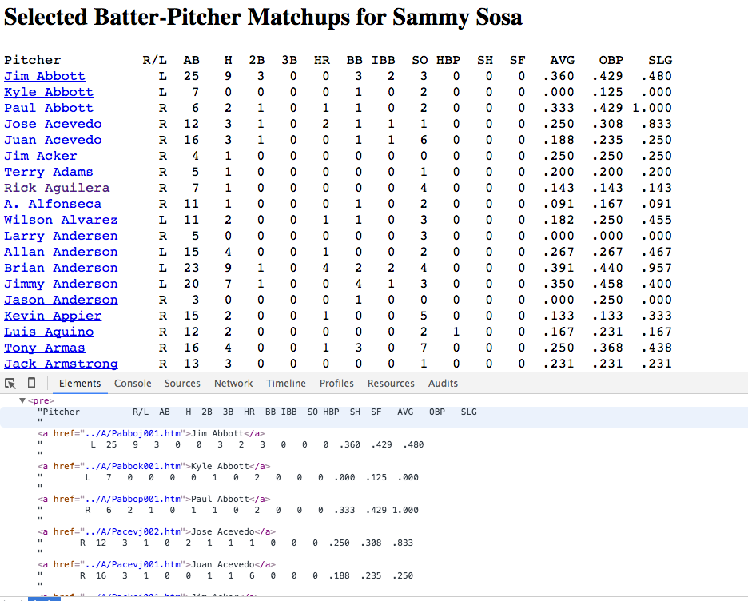
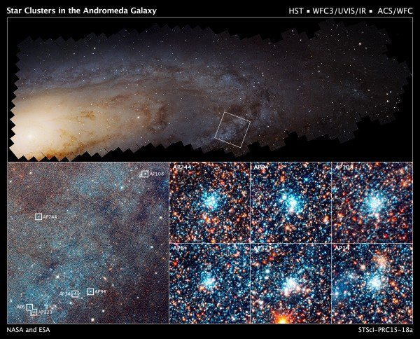

Imagine you're the manager of the
Chicago Cubs, trying to win the last game
of the World Series. Your best player has
just been injured, and you need to pick
the best pinch-hitter to replace him for a
crucial at-bat. Your last two players, Abe
and Bruce, both have identical .250
batting averages. You think, "Maybe one
has more success against the opposing
pitcher, Charlie," but alas neither of
them has ever faced him before!
In the final project for Harvard's Data
Science course AC 209 (Fall 2015), our
team of 4 developed an approach to solving
this problem using collaborative
filtering, the same framework used by
companies like Netflix to predict whether
you will like a movie. In the Netflix
model, other users are assigned similarity
ratings to you, based on how much you
liked the same sets of movies. Netflix
makes the assumption that if users who are
similar to you liked the new movie in
question, then you probably will too!
Our baseball analysis relied on a
similar supposition: that we should be
able to find sets of "similar" batters to
Abe and Bruce, and that those batters'
success against Charlie will predict how
well Abe and Bruce are likely to do. Just
like Netflix finds that some users really
like sci-fi movies, we hoped to identify
groups of batters who (for example) did
well against fastball pitchers, and others
who do well against the curve-ball.
My primary contribution to the project
was in collecting, cleaning, and
distributing a database of player
statistics. The key data required was: how
many times has each MLB batter faced each
MLB pitcher, and how successful were they?
While there are neatly curated databases
listing all MLB batters and pitchers such
as
the Lahman
Database, the only online database of
batter-pitcher matchups is collected in a
large series of fairly unstructured HTML
pages
through retrosheet.org
(example page
for Sammy
Sosa is shown below).

I developed code to crawl the
Retrosheet encyclopedia and scrape the
matchup data for each MLB player,
collecting the HTML data into a Pandas
dataframe to be analyzed in Python. Our
group then developed a variety of
collaborative filtering models and used
them to try to predict the success of
individual batters against particular
pitchers.
Unfortunately, our models were only
marginally more successful than using a
batter's overall batting average. We
suspect that this indicates that a
batter's success against various
pitchers is primarily due to luck and
small-number statistics (most batters
hadn't faced a given pitcher more than
10 times), and not to
statistically-significant differences in
their abilities against that pitcher.
Autonomous Gameplay
Reinforcement learning used to outperform humans on computer game
For more details, see the technical writeup produced for the course. The video below shows my algorithm learning and playing the game. The algorithm successfully learns and improves on human performance by run 57 (1:09 in the video).
Computers are continuing to outperform
humans in a variety of skill- and
intelligence-based games, such as Chess
and Go. Many of the successful algorithms
include a combination of expert-written
heuristics and analysis of millions of
human-played games.
For the final project of Harvard's
Machine Learning course CS 181 (Spring
2016), my partner and I designed
algorithms which could learn to play a
simple computer game (Swingy
Monkey, an open-source game inspired
by Flappy Bird) solely through
trial-and-error. After only 57 games (1
minute) played, my algorithm could
consistently match or best human
abilities.
The video game is straight-forward: a monkey sprite,
controlled by the user, moves through the jungle at a constant
x-velocity and subject to gravity. The user must choose when
to "jump" (grab a vine and swing), such that the monkey passes
through gaps in the trees and does not fall off the
screen. The basic algorithm to learn gameplay is likewise
fairly straight-forward: given a particular state
(position, velocity, distance to tree, etc), decide whether to
jump or continue falling. The algorithm begins with no prior
knowledge of which actions should be taken, so it must begin
by taking random actions, seeing how well those actions do,
and eventually transitioning to using its knowledge to play
optimally (see the Multi-armed Bandit problem).
The key conceptual challenges to designing a successful algorithm were:
Which properties should be included and modeled as part of the monkey's state?
The monkey never returns to exactly the same point in state-space. How do we identify "similar" situations to learn from?
How long should the algorithm "learn" for, and when should it instead switch over to trying to play the best it can?
One of my major contributions to the project was in
answering question (1), using domain knowledge from physics to
design an optimal set of state properties which would be
useful in solving the problem. We then developed two different
solutions to question (2): discretizing the state-space into a
matrix, and linearly-interpolating between observed
points. The discretization algorithm was inefficient, as
either the grid was too coarse and couldn't make accurate
predictions, or took extremely long before enough datapoints were
collected in each state-space bin to make a correct prediction.
In contrast, the linear-interpolation algorithm was
extremely efficient at learning to play the game successfully,
and after only 1 minute of gameplay (56 games played), managed
to outperform human abilities by playing for over 2.5
consecutive minutes without failing. The video above shows the
results (best run at 1:09).
Master's Thesis
Post-processing of Cosmological Simulations
For more details on the scientific content of the project,
see my Astronomy Research page,
or my published
paper from the project. The video below (produced by the
Illustris team) highlights the scale and breadth of the
simulation.
The Illustris
Simulation was, in 2014 when it was completed, the most
computationally intensive simulation of the universe ever
completed. It tracked gravitational and hydrodynamic forces on
12 billion particles, took 19 million CPU hours (over 8200
compute cores) to run, and resulted in nearly 1 PB of raw output data.
For my master's thesis project, I developed code to
post-process and analyze the data from the final ∼10TB of
output. Each star particle was grouped into its host "galaxy",
and my code replicated making observational measurements on
real galaxies. These "mock observations" were found to
correlate strongly with unobservable properties of the
galaxies (such as how recently they had collided with a
neighboring galaxy), allowing our simulations to provide
context to the observations of real galaxies.
PhD Thesis
Bayesian Forward-modelling of Hubble Space Telescope Images with GPU Acceleration
For more details on the scientific content of the project,
see my Astronomy Research
page. Demonstrations of the model, written in Javascript to
run in web browsers, are available on my outreach page.
With the incredible resolution of the Hubble Space
Telescope, astronomers can get more detailed view of our
neighboring galaxies than ever before. The image below shows
an example of how far we can zoom in on the Andromeda galaxy
with Hubble.

This incredible amount of data coming from each Hubble
image necessitates very complex and computationally intensive
models to interpret all the features that are observed. My PhD
Thesis project focuses on creating forward models of these
Hubble images: given a particular set of galaxy properties
(mass, age, chemical content, etc), my code creates a
simulated image of that galaxy as it would be observed by
Hubble. Many of these simulations (with different underlying
properties) can be compared to real Hubble observations and we
use Bayesian inference to estimate the properties of real
galaxies.
To simulate each image, my code randomly populates each of
the >1 million pixels with anywhere between 10 to 1 billion
simulated stars, before convolved their light with a Gaussian
kernel simulating Hubble's optical resolution. This stochastic
process involves over 1010 random draws from
Poisson distributions.
Major portions of this algorithm are embarassingly parallel
and are perfectly suited to GPU-acceleration. After converting
major portions of my code from Python to GPU-accelerated CUDA
C, I managed to speed-up each simulation by a factor of over
16x. I also created a simplified version of the
code for demonstration purposes,
written in Javascript, which can be run natively in a web
browser. First results from our code will be submitted for
publication in Fall 2017.